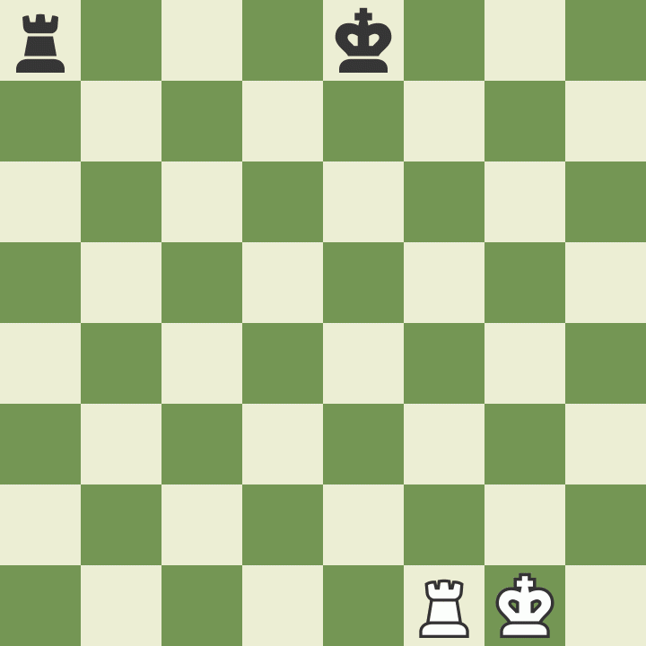

В шахматах есть несколько особых правил, придуманных, чтобы сделать игру более весёлой и интересной.
У пешки есть одна замечательная особенность: дойдя до противоположной стороны доски, она может стать любой другой фигурой (это называется "пешечное превращение").
Пешка может превратиться в любую фигуру. Некоторым любителям кажется, что пешка может превратиться лишь в одну из ранее взятых фигур. Это НЕ так. Как правило, пешку превращают в ферзя, но возможно и превращение в другие фигуры.

Последнее правило, относящееся к пешкам, называется "взятие на проходе". Пешку, сделавшую ход на два поля от своей первоначальной позиции, может взять пешка соперника, расположенная на соседней вертикали и на горизонтали, только что занятой пешкой. При взятии пешка соперника занимает не то поле, которое заняла взятая пешка, а то, которое она миновала.
Такое взятие возможно только ходом, следующим за продвижением на два поля, и невозможно впоследствии. Изучим пример, чтобы лучше понять это необычное, но важное правило.
Рокировка - еще одно особое правило шахмат. Рокировка позволяет сделать две важные вещи за один ход: обезопасить (по возможности) вашего короля и вывести из угла ладью, включив её в игру. Совершая рокировку, игрок перемещает своего короля на два поля по направлению к ладье, затем эта ладья занимает на поле, которое король только что пересек (смотрите пример). Рокировку можно выполнить только при соблюдении следующих условий:
1) до рокировки король ни разу не ходил;
2) ладья, совершающая рокировку, ни разу не ходила;
3) между королём и ладьёй нет других фигур;
4) король не находится под шахом и не пересекает поле, атакованное фигурой противника.
Обратите внимание, что при рокировке на королевский фланг король оказывается ближе к краю доски. Этот ход называется "короткой рокировкой". Рокировка на другой фланг, через поле, где находился ферзь, называется "длинной рокировкой". Как при короткой, так и при длинной рокировке, король передвигается только на два поля. 